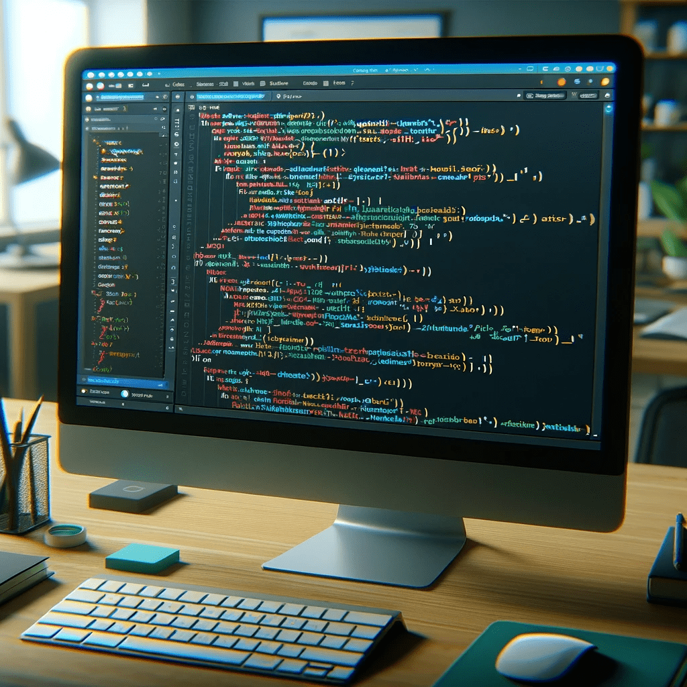

Übung zu den Grundlagen von CSS Flexbox und CSS Grid.
Um eine moderne Webseite zu erstellen, sollten Sie folgende Grundkenntnisse und Tools beherrschen:
Für die Erstellung von HTML- und CSS-Code benötigen Sie einen guten Texteditor. Beliebte Optionen sind VSCode, Sublime Text oder Atom.
Ein solides Verständnis von HTML und CSS ist unerlässlich, um effektiv Webseiten zu gestalten.
Responsive Webdesign stellt sicher, dass Ihre Webseite auf verschiedenen Geräten gut aussieht und funktioniert.
Die Entwicklertools der Browser sind unverzichtbar für das Debugging und Testen von Webseiten.